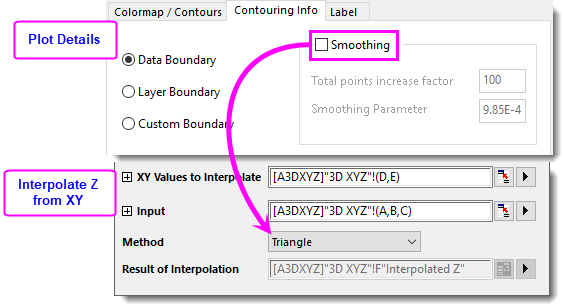
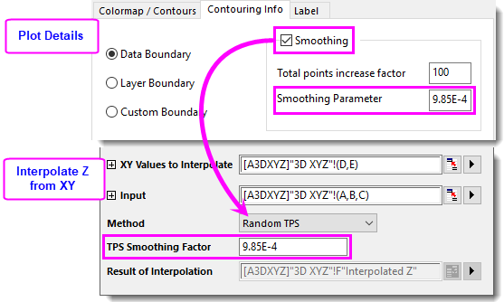

FAQ-1183 Wie ermittle ich die Z-DAten in einem spezifischen XY-Wert im Konturdiagramm?
Interpolate-Z-From-XY-In-Contour
Letztes Update: 03.08.2023
Um den Z-Wert aus einem Paar angegebener XY-Daten in einem XYZ-Konturdiagramm zu ermitteln, können Sie das Hilfsmittel Z aus XY interpolieren verwenden.
- Wählen Sie Analyse: Mathematik: Z aus XY interpolieren im Menü.
- In dem aufgerufenen Dialog
- Zu interpolierende XY-Werte: Wählen Sie die XY-Spalten, für die Sie die Z-Werte berechnen wollen.
- Eingabe: Wählen Sie die XYZ-Spalten, aus denen die Kontur erstellt werden soll.
-
Methode:
- Glättungsoption in Kontur ist nicht gewählt: Verwenden Sie Methode = Dreieck
- 
- Wählen Sie die Glättungsoption in Kontur: Verwenden Sie die Methode = Random TPS und den TPS-Glättungsfaktor Glättungsparameter.
- 
Schlüsselwörter:Interpolation, Konturwert, XYZ-Kontur, Z berechnen